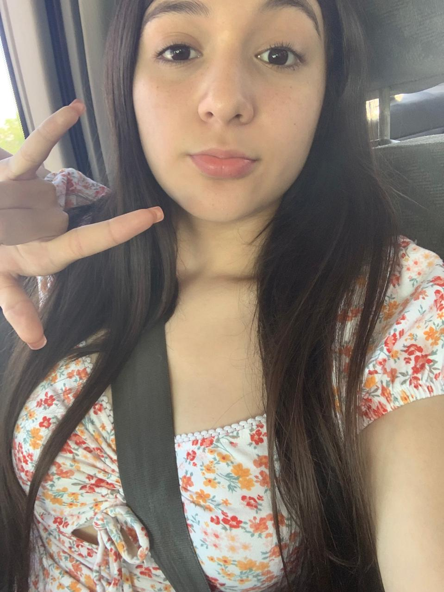

YO:Soy una niña de signo sagitario lo que significa que soy expreciva,delicada,misteriosa y dudosa, amo estar junto a mis seres queridos en momentos especiales y este año cumplo los 16 y me falta bastante por experimentar, tengo mejorea amigas que amo con el alma entera igual que a amigos
Mis papas son personas de respeto y jamas mienten, mi papa es nacido en Octubre y mi mama en Junio lo que significa que son comelones,risueños e intrigosos los amo demaciado y de hecho ellos ya no cuentan con sus papis pero para eso estoy yo para llenarles ese vacio y muchos de los que tienen o han tenido gracias a su infancia
Mi familia esta formada por 10 (papas,hermanos y cuñada) ellos son super divertidos mis 2 hermanos les encanta tomar,y a mis cuñadas comedrear y tres hermanos ya cuentan con familia y tengo 2 hermanos solteros me gusta pasar tiempo de calidad con ellos y ellas
|  | |
|---|---|